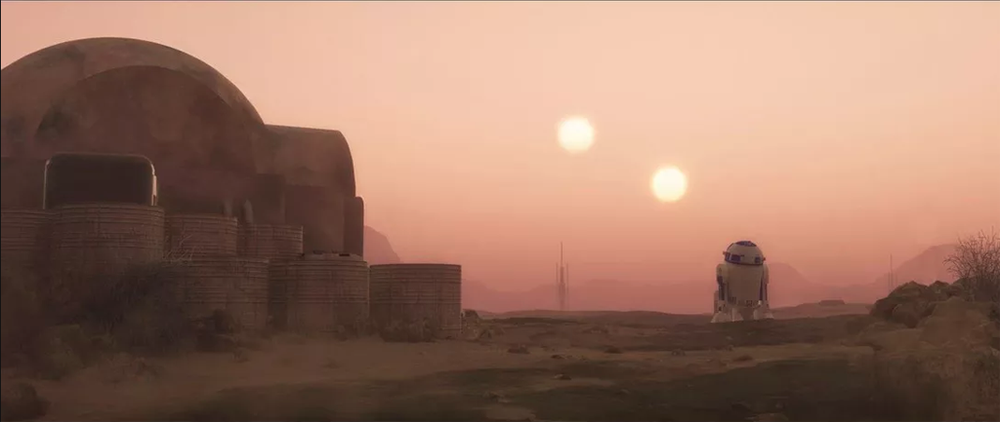
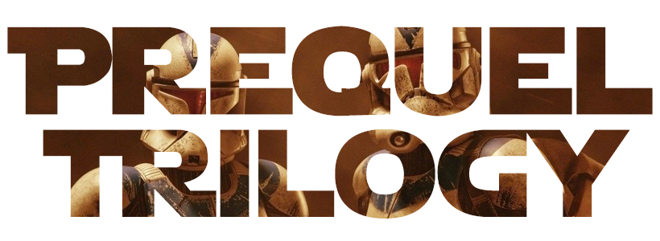
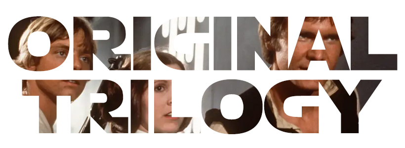
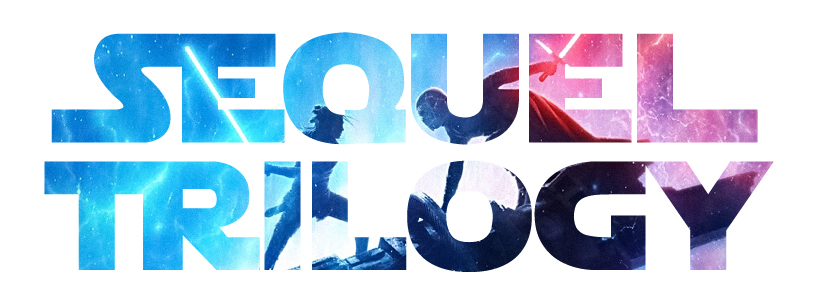

The Star Wars Saga
A long time ago in a galaxy far, far away...
Everything in Star Wars has a story. Every character, every weapon, every planet, and every ship helps form one of the most involved taxonomies of any cinematic universe.
However, for someone unfamiliar with the series, this can make enjoying the franchise feel like an intimidating or impossible task. This website is a brief primer for anyone who would like to enjoy the films, but isn’t sure where or how to start.
The Three Trilogies
Over the past 40 years, Star Wars has spawned countless comic books, audio dramas, television series, novelisations, video games, and more. Instead of cataloguing all of these titles here, we will focus on nine of the major films.
Prequel Trilogy
The Prequel Trilogy is the second trilogy of the saga to be released.
- Episode I: The Phantom Menace (1999)
- Episode II: Attack of the Clones (2002)
- Episode III: Revenge of the Sith (2005)
Read more on the Prequel Trilogy page.
Original Trilogy
The Original Trilogy is the first trilogy of the saga to be released.
- Episode IV: A New Hope (1977)
- Episode V: The Empire Strikes Back (1980)
- Episode VI: Return of the Jedi (1983)
Read more on the Original Trilogy page.
Sequel Trilogy
The Sequel Trilogy is the third trilogy of the saga to be released. It is also the first trilogy to be produced after Walt Disney's acquisition of Lucasfilm Ltd.
- Episode VII: The Force Awakens (2015)
- Episode VIII: The Last Jedi (2017)
- Episode IX: The Rise of Skywalker (2019)
Read more on the Sequel Trilogy page.
Episode Viewing Order
There is a lot of debate surrounding what the best viewing order is. This is due to the fact that the series was theatrically released in media res, or ‘in the middle’ of the story.
We suggest starting with Episode IV: A New Hope as a litmus test for whether or not you will enjoy Star Wars. This is because it closely follows the monomyth, or Joseph Campbell’s the hero’s journey, and works as a self-contained story.
The Holiday Special
The Star Wars Holiday Special is a 97 minute television variety show that has achieved a certain cult status with fans. While the special was never officially released on video, bootleg version have been in circulation for years.
George Lucas, the original creator and director for the series, famously tried (and failed) to buy all of the master copies in an attempt to make sure that the special was never broadcast again. Speaking at a convention, Lucas famously remarked, “If I had the time and a sledgehammer, I would track down every bootlegged copy of that programme and smash it.”
Read more about the special on our Star Wars Holiday Special page.